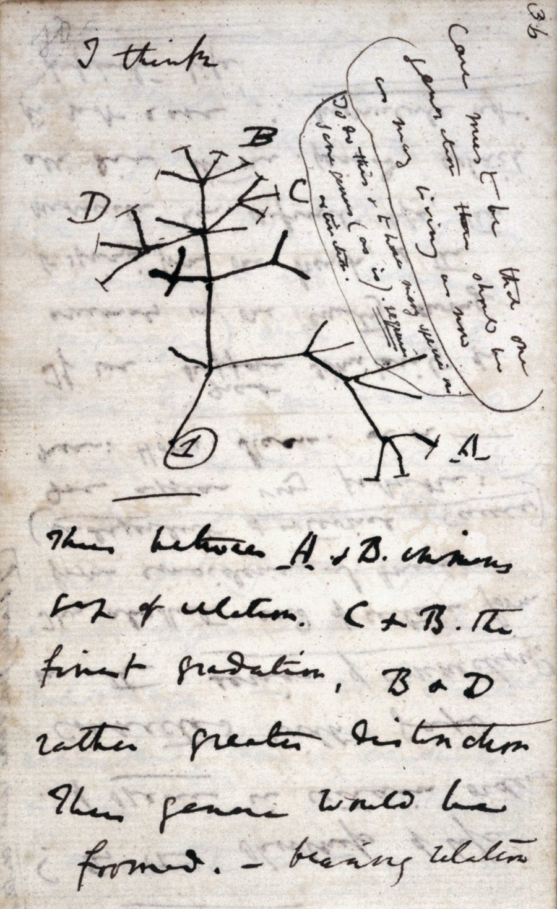
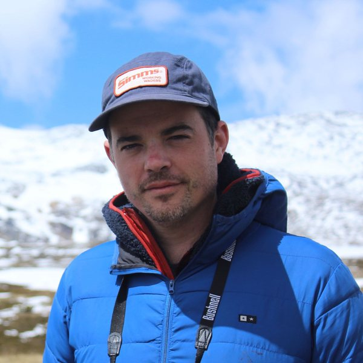
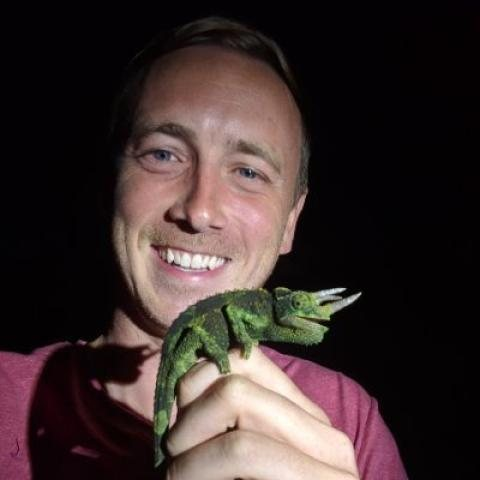

- Tuesdays and Thursdays, 2:00 to 3:15 pm
- Room: TBA
- Syllabus (PDF)

Why are there so many kinds of animals?
G. Evelyn Hutchinson, 1959. Nearly 70 years later, still open.
Coming up · Week 1
An Introduction to Biodiversity
Tue Jan 12 and Thu Jan 14
4 required readings:
- Darwin (1859), Origin of Species, Introduction
- Darwin (1859), Origin of Species, Chapter IV
- Hutchinson (1959), Homage to Santa Rosalia
- Laland et al. (2014), Does evolutionary theory need a rethink?
Course scope and objectives
In this course, you will explore the fundamental ecological and evolutionary processes that generate and maintain biological diversity across scales, from genes to ecosystems. Students will examine how species originate, interact, and adapt to their environments through a modern synthesis of evolutionary theory and ecological principles. The course emphasizes both conceptual frameworks and empirical research, providing graduate students and advanced undergraduates with fundamental tools to understand biodiversity patterns and processes.
Each class will revolve around a basic concept, from which we have identified a set of core concepts that we think all biology graduate students leaving with a PhD from our department should have a working understanding of. Each class will have required readings, a short lecture portion, and student activity (e.g., higher level journal discussion, or some other effective active learning technique that will engage students).
By the end of this course, you will be able to:
- Identify and evaluate the major ecological and evolutionary processes responsible for generating and maintaining biodiversity
- Read and critically analyze primary literature spanning ecology, evolutionary biology, biogeography, and behavior
- Develop and articulate your own position on active debates in the field, supported by evidence
- Connect short-term micro-scale processes to macro-scale patterns, and recognize where those connections remain contested
- Identify unresolved questions at the leading edge of contemporary ecological and evolutionary research, and evaluate what kinds of evidence would advance them
Critically, each class will end with what we don't know. Unresolved questions are as important as settled ones, and learning to identify the frontier is a core skill for any research biologist.
Instructors


AI writing tools are not permitted in this course. Read the AI policy.